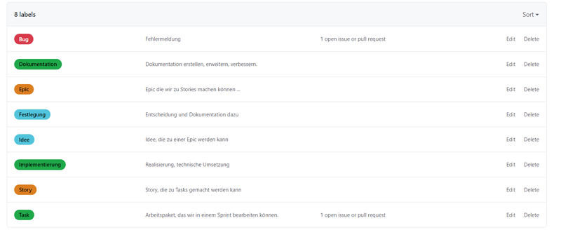

Wir verwenden Issues in den Projekten und dort die Automatisierung, so dass wir Stories und Tasks als Issues verwenden können. Die Defaults in der Organization sind so konfiguriert, dass neu angelegte Repositories immer die gleichen Farben und Bezeichner für Issues haben.

In der folgenden Tabelle finden wir die Bezeichner und die Farben.
| Label | Farbe |
| Bug | d73a4a |
| Epic | db7e20 |
| Story | db7e20 |
| Task | 1ea849 |
| Dokumentation | 1ea849 |
| Implementierung | 1ea849 |
| Idee | 51c4db |
| Festlegung | 51c4db |